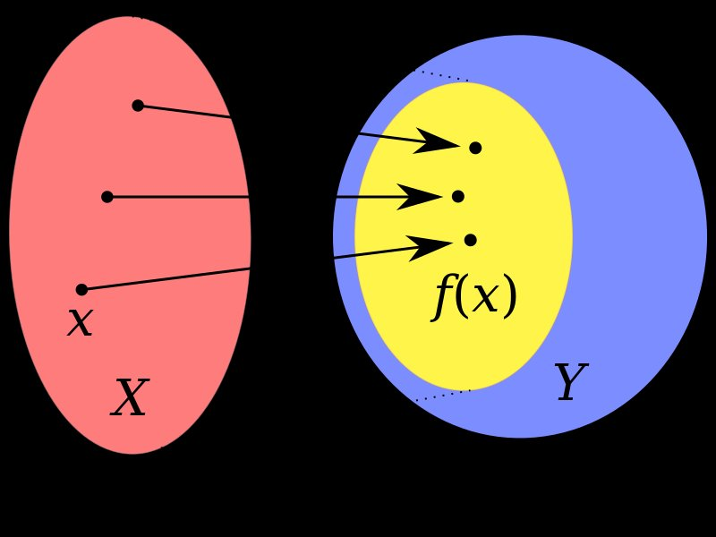

 the domain of definition (or simply the domain) of a function is the set of "input" or argument values for which the function is defined. That is, the function provides an "output" or value for each member of the domain. Conversely, the set of values the function takes on as output is termed the image of the function, which is sometimes also referred to as the range of the function.
When \(a \ne 0\), there are two solutions to \(ax^2 + bx + c = 0\) and they are $$x = {-b \pm \sqrt{b^2-4ac} \over 2a}.$$